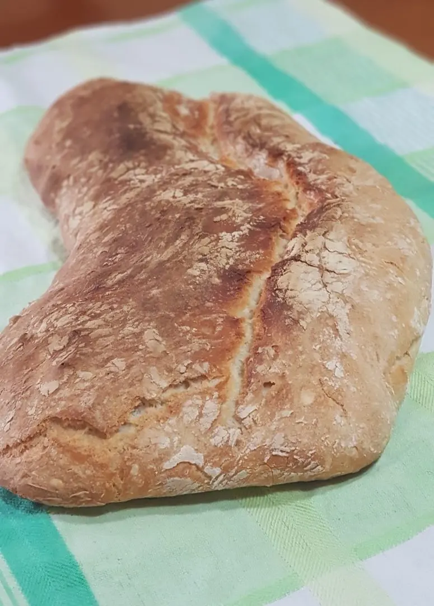
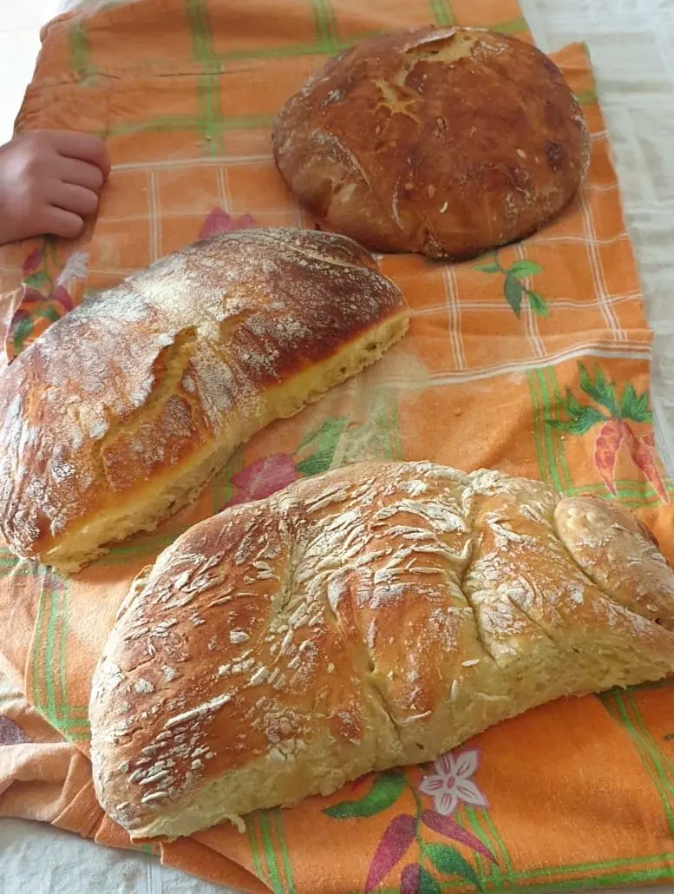
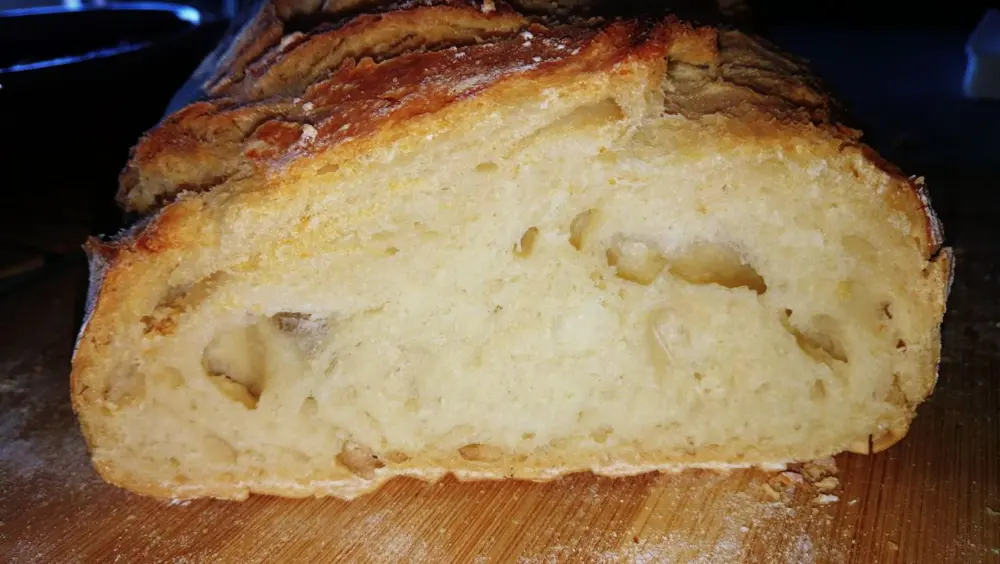
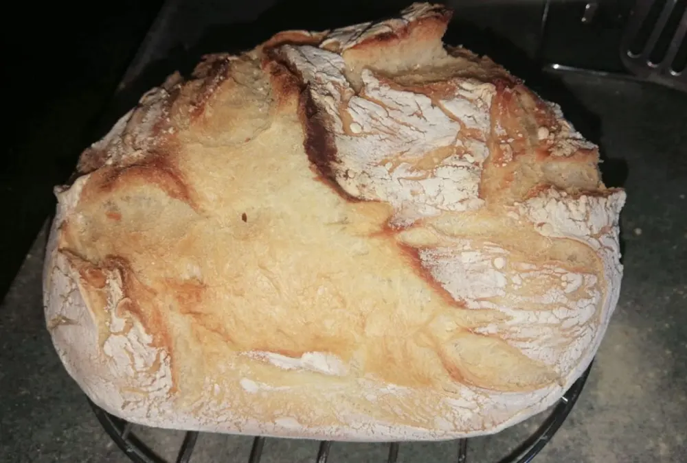

Pane sempre caldo fatto in casa

In quarantena, per il nostro bene sappiamo che è cosa buona stare in casa, in merito a questo mia sorella ha pensato bene di fare il pane in casa.
Un alimento che solitamente acquistiamo quotidianamente o ogni paio di giorni.
Ispirata dalla ricetta della ormai celebre Benedetta, che potremo trovare sia su youtube che facebook, si è messa all'opera.
Dopo di lei ha provato anche mia cognata e mia madre e vi posso assicurare che il risultato è stato molto gradito. Vi posto qui un po' tutte le foto del pane che abbiamo fatto in casa.
Con pochi ingredienti e davvero con molta facilità, è possibile portare il pane in tavola caldo ed estremamente buonissimo.

INGREDIENTI:
- 400 gr di farina 0
- 300 ml di acqua
- 2 gr di lievito di birra disidratato
- 1/2 cucchiaino di zucchero
- 1 cucchiaino di sale
PREPARAZIONE PER IMPASTARE IL PANE:

Per preparare il pane mettete in una ciotola la farina, aggiungete il lievito di birra disidratato, mezzo cucchiaino di zucchero per attivare il lievito, il cucchiaino sale e mescolate con le mani.
In un'altra ciotola mettete l'acqua e versate la farina un po' alla volta, mescolando con una forchetta.
Se l'impasto vi sembrerà granuloso, non preoccupatevi, è normale!
Una volta aggiunta e incorporata tutta la farina, non dovete fare altro che far riposare l'impasto nella ciotola, coperto da pellicola, per circa 10/15 minuti a temperatura ambiente.
Dopo 10/15 min. riprendete l'impasto e con una spatola da cucina girate più volte. Dopodiché fate riposare di nuovo altri 10 minuti l'impasto, comprendo sempre con la pellicola.
Fate questo procedimento altre 3 volte e vedrete che l'impasto diventerà omogeneo e liscio.
Fatto ciò, mettete la ciotola con l'impasto a riposare in frigorifero, lasciandolo coperto sempre con la pellicola.
Adesso non ti resta che aspettare dalle 6 alle 24 ore, è a scelta. Infatti, potete anche farlo la sera prima e l'indomani procedere ad infornare.

Oppure farlo di pomeriggio per prepararlo la sera e mangiarlo caldo a tavola.
Insomma, è semplice ma soprattutto comodo.
Dunque, quando avete deciso di metterlo in forno, prendete l'impasto dalla ciotola, stendetelo su un piano da lavoro e lavoratelo delicatamente. Stendendolo bene e poi piegatelo su stesso e poi arrotolate a palla.
Infine, mettetelo in un canovaccio ed infarinatelo bene, con abbondante farine e lasciatelo riposare per almeno 90 minuti. In modo tale che aumenti il suo volume e lieviti.
Per finire prendete una pentola in acciaio o ceramica, va bene sia l'una che l'altra. Mettete la pentola con il coperchio, dentro il forno, preriscaldato a 230° e la fatelo scaldare.
Tirate fuori dal forno la pentola bollente, aiutandovi ovviamente con delle presine e ci mettete dentro l'impasto, direttamente dalla ciotola.
Mettete il coperchio sulla pentola e fate cuocere a 230° per 30 minuti, poi aprite il forno, togliete il coperchio e continuate la cottura a 220° per altri 20 minuti, finché non si sarà formata una bella crosticina croccante sul pane.

In modo semplice, veloce, comodo ed economico avrete il pane in tavola sempre da gustare. È possibile anche farlo con altre varianti, ad esempio noci, spinaci, olive, tutto sta nella fantasia!